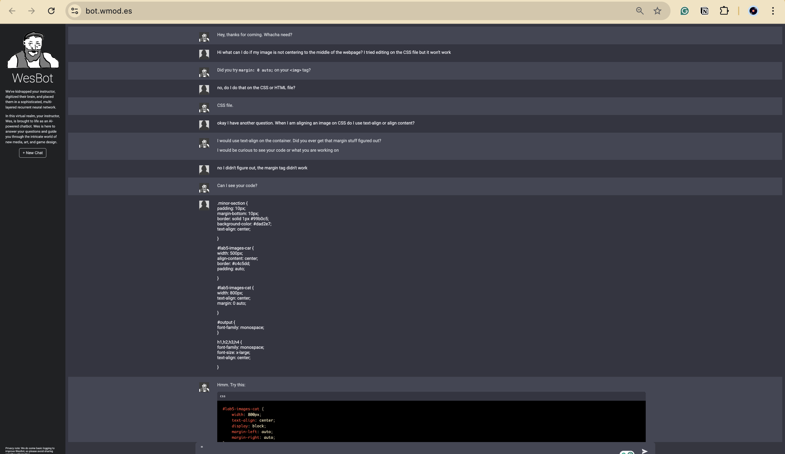
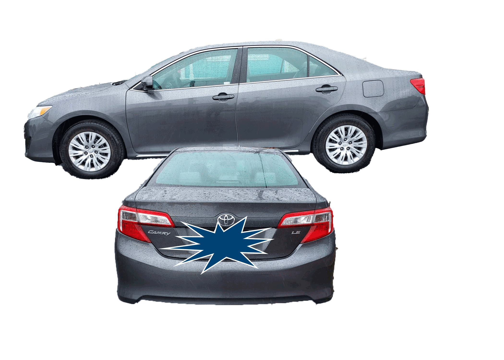
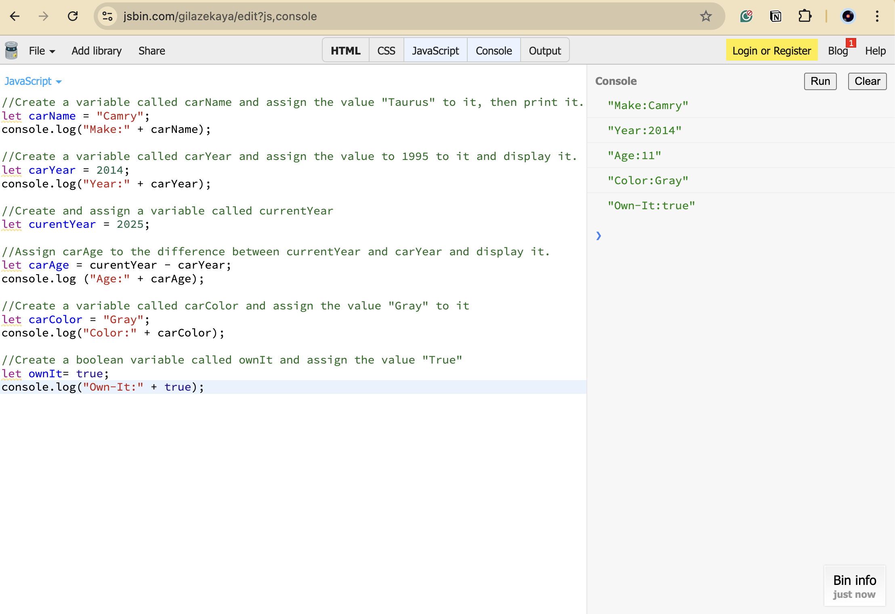

Lab 5 - Data Types and Variables
Challenge
For Lab 5, I had to make sure that my tags were being used correctly. I was refrencing the tags that Wes was using for his example on the lab, and since they aren't named the same as my file system, they weren't being recognized. Luckily, I was able to catch this mistake early on!
Problems
A problem I faced with the coding process was that my top image of the cat was not alignig to the center. My inspection kept saying that my inline property was not formated correctly. I was stuck because I thought I had the CSS file in check, but ultimately I had to use the WesBot to help me solve the problem and it did!
Reflection
Overall, it was a productive lab where I feel as though I learned a lot about JavaScript variables and editing features on CSS. With this lab specifically, it became more apparent that staying organized during labs is key! Not just with file system but also with the window tabs, I felt like I was getting lost in my own webpages. Once I figured out an organization system that works for me, the rest of the lab went smoothly.
Results
Script Output
Lab Images
Task 1^ JavaScript Variables
Task 2^ A JavaScript Program